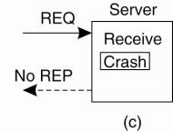
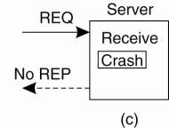
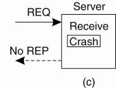

CS865 – Distributed Software Development |
|
Lecture 8 |
Key technique: Redundancy.
Maintainability – when a system fails, it can be repaired easily and quickly (and, sometimes, without its users noticing the failure).
Definition: A system is said to “fail” when it cannot meet its promises.
The cause of an error is a “fault”.
Distinction between preventing, removing, and forecasting faults (Avizienis et al., 2004).
The system can tolerate faults and continue to operate normally.
Permanent Fault – once it occurs, only the replacement/repair of a faulty component will allow the DS to function normally.
|
Type of failure |
Description |
|
Crash failure |
A server halts, but is working correctly until it halts |
|
|
|
Timing failure |
A server's response lies outside the specified time interval |
|
|
|
Arbitrary failure |
A server may produce arbitrary responses at arbitrary times |
Physical Redundancy – add extra (duplicate) hardware and/or software to the system.
Recovery Strategie
If one of the processes fail, it is assumed that one of the others will still be able to function (and service any pending request or operation
Communication in a flat group – all the processes are equal, decisions are made collectively.
Note: no single point-of-failure, however: decision making is complicated as consensus is required.
Communication in a simple hierarchical group - one of the processes is elected to be the coordinator, which selects another process (a worker) to perform the operation.
Note: single point-of failure, however: decisions are easily and quickly made by the coordinator without first having to get consensus.
By organizing a fault tolerant group of processes , we can protect a single vulnerable process.
Two approaches to arranging the replication of the group:
Primary (backup) Protocols
A group of processes is organized in a hierarchical fashion in which a primary coordinates all write operations.
When the primary crashes, the backups execute some election algorithm to choose a new primary.
Replicated-Write Protocols
Replicated-write protocols are used in the form of active replication, as well as by means of quorum-based protocols.
Solutions correspond to organizing a collection of identical processes into a flat group.
Adv. - these groups have no single point of failure, at the cost of distributed coordination.
Agreement in Faulty Systems
Turek and Shasha (1992) distinguish the following cases:
Message transmission is done through unicasting or multicasting.
Circumstances under which distributed agreement can be reached.
In all other cases, it can be shown that no solution exists.
Known as the Byzantine agreement problem (Lamport et al. 1982)
History Lesson: The Byzantine Empire
Time: 330-1453 AD.
Place: Balkans and Modern Turkey.
Endless conspiracies, intrigue, and untruthfullness were alleged to be common practice in the ruling circles of the day (sounds strangely familiar … ).
That is: it was typical for intentionally wrong and malicious activity to occur among the ruling group. A similar occurance can surface in a DS, and is known as ‘byzantine failure’.
Question: how do we deal with such malicious group members within a distributed system?
How does a process group deal with a faulty member?
The “Byzantine Generals Problem” for 3 loyal generals and 1 traitor.
The vectors that each general receives in step 3. It is clear to all that General 3 is the traitor. In each ‘column’, the majority value is assumed to be correct.
Assume N processes, where each process i will provide a value vi to the others.
Algorithm for the case of N = 4 and k = 1.
Algorithm operates in four steps.
Every non-faulty process i sends vi to every other process using reliable unicasting.
Let vi =i. In (Fig.a) t process 1 reports 1, process 2 reports 2, process 3 lies to everyone, giving x, y, and z, respectively, and process 4 reports a value of 4.
Every process passes its vector from (Fig.b) to every other process.
Results in (Fig.c).
Each process examines the ith element of each of the newly received vectors.
What these processes conclude regarding v 3 cannot be decided, but is also irrelevant.
Lamport et al. (1982) proved that in a system with k faulty processes, agreement can be achieved only if 2k + 1 correctly functioning processes are present, for a total of 3k + 1.
Agreement is possible only if more than two-thirds of the processes are working properly.
Omission (incoming request ignored);
Timing (responding too soon or too late);
Response (getting the order wrong);
Arbitrary/Byzantine (indeterminate, unpredictable).
Processes actively send "are you alive?" messages to each other (for which they obviously expect an answer)
Makes sense only when it can be guaranteed that there is enough communication between processes.
Processes passively wait until messages come in from different processes.
In practice, actively pinging processes is usually followed.
The client cannot locate the server, so no request can be sent.
The client’s request to the server is lost, so no response is returned by the server to the waiting client.
The server crashes after receiving the request, and the service request is left acknowledged, but undone.
The server’s reply is lost on its way to the client, the service has completed, but the results never arrive at the client
The client crashes after sending its request, and the server sends a reply to a newly-restarted client that may not be expecting it.

At least once semantics: a guarantee is given that the RPC occurred at least once, but (also) possibly more that once.
At most once semantics: a guarantee is given that the RPC occurred at most once, but possibly not at all.
No semantics: nothing is guaranteed, and client and servers take their chances!
Why was there no reply?
Is the server dead, slow, or did the reply just go missing?
(For example: a read of a static web-page is said to be idempotent).
A common solution is to employ unique sequence numbers.
Another technique is the inclusion of additional bits in a retransmission to identify it as such to the server.
extermination (the orphan is simply killed-off),
expiration (if the RPC cannot be completed within a stardard amount of time, it is assumed to have expired).
Sounds simple, but is surprisingly tricky (as multicasting services tend to be inherently unreliable).
What happens if a process joins the group during communication?
Worse: what happens if the sender of the multiple, reliable point-to-point channels crashes half way through sending the messages?
If a receiver detects it is missing a message, it may return a negative acknowledgment, requesting the sender for a retransmission.
Also, such schemes perform poorly as the group grows … there are too many ACKs.
Receivers never acknowledge successful delivery.
Only missing messages are reported.
Negative acknoledgements (NACK) are multicast to all group members. (Don't send any more.)
This allows other members to supress their feedback, if necessary.
To avoid “retransmission clashes”, each member is required to wait a random delay prior to NACKing.
See Towsley et al. (1997) for details - but no hard guarantees can be given that feedback implosions will never happen.
Successful delivery is never acknowledged, only missing messages are reported (NACK), which are multicast to all group members.
If another process is about to NACK, this feedback is suppressed as a result of the first multicast NACK.
In this way, only a single NACK is delivered to the sender.

No single best solution exists, and each solution introduces new problems.
A requirement where the system needs to ensure that all processes get the message, or that none of them get it.
An additional requirement is that all messages arrive at all processes in sequential order.
Atomic multicasting ensures that nonfaulty processes maintain a consistent view of the database, and forces reconciliation when a replica recovers and rejoins the group.
Messages should be delivered in causal or total order (depending on application semantics).
Need to guarantee that m is either delivered to all processes in the list in order or m is not delivered at all. (Virtual synchrony #3 & #4)
Unordered multicasts
virtually synchronous multicast in which no guarantees are given concerning the order in which received messages are delivered by different processes
FIFO-ordered multicasts
the communication layer is forced to deliver incoming messages from the same process in the same order as they have been sent
Causally-ordered multicasts
delivers messages so that potential causality between different messages is preserved
Totally-ordered multicasts
regardless of whether message delivery is unordered, FIFO ordered, or causally ordered, it is required additionally that when messages are delivered, they are delivered in the same order to all group members.
With the three different message ordering constraints discussed above, this leads to six forms of reliable multicasting (Hadzilacos and Toueg, 1993).

[In the case of atomic multicasting, the operation is the delivery of the message.]
There are three types of “commit protocol”: single-phase, two-phase and three-phase commit.
An elected co-ordinator tells all the other processes to perform the operation in question.
But, what if a process cannot perform the operation?
There’s no way to tell the coordinator!
The solutions: Two-Phase and Three-Phase Commit Protocols
First developed in 1978!!! Gray (1978)
Summarized: GET READY, OK, GO AHEAD.
The coordinator sends a VOTE_REQUEST message to all group members.
A group member returns VOTE_COMMIT if it can commit locally, otherwise VOTE_ABORT.
All votes are collected by the coordinator.
A GLOBAL_COMMIT is sent if all the group members voted to commit.
If one group member voted to abort, a GLOBAL_ABORT is sent.
Group members then COMMIT or ABORT based on the last message received from the coordinator.
It can lead to both the coordinator and the group members blocking, which may lead to the dreaded deadlock.
If the coordinator crashes, the group members may not be able to reach a final decision, and they may, therefore, block until the coordinator recovers …
Two-Phase Commit is known as a blocking-commit protocol for this reason.
The solution? The Three-Phase Commit Protocol
There is no state in which it is not possible to make a final decision, and from which a transition to a COMMIT state can be made.
Once a failure has occurred, it is essential that the process where the failure happened recovers to a correct state.
Recovery from an error is fundamental to fault tolerance.
Two main forms of recovery:
Backward Recovery: return the system to some previous correct state (using checkpoints), then continue executing.
Forward Recovery: bring the system into a correct state, from which it can then continue to execute.
Generally applicable independent of any specific system or process.
It can be integrated into (the middleware layer) of a distributed system as a general-purpose service.
Checkpointing (can be very expensive (especially when errors are very rare).
[Despite the cost, backward recovery is implemented more often. The “logging” of information can be thought of as a type of checkpointing.].
Recovery mechanisms are independent of the distributed application for which they are actually used – thus no guarantees can be given that once recovery has taken place, the same or similar failure will not happen again.
In order to work, all potential errors need to be accounted for up-front.
When an error occurs, the recovery mechanism then knows what to do to bring the system forward to a correct state.
See also Alvisi and Marzullo (1998) for message-logging schemes.
Underlying principle - it may be much cheaper to optimize for recovery, then it is aiming for systems that are free from failures for a long time.
means deleting all instances of the identified components, along with the threads operating on them, and (often) to just restart the associated requests.
Basic idea - many failures can be simply avoided if programs are given extra buffer space, memory is zeroed before allocated, changing the ordering of message delivery (as long as this does not affect semantics), and so on (Qin et al., 2005).